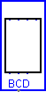

| Library: | BFH mega functions |
| Introduced: | 3.x.x |
| Appearance: |  |
This component converts a four-bit binary-coded-decimal digit to a format
suitable for use with a  7-Segment Display. The BCD2SevenSegment
component as a "hole" in the center, sized to exactly fit one such display.
7-Segment Display. The BCD2SevenSegment
component as a "hole" in the center, sized to exactly fit one such display.
This component is not necessary in most scenarios—it was created as a
stop-gap measure before FPGA support was added to many components, but is no
longer useful for new circuits. Rather than using a BCD2SevenSegment converter
paired with a Seven Segment Display, you can simply use a  Hex
Digit Display alone (which internally contains suitable number format
conversion logic).
Hex
Digit Display alone (which internally contains suitable number format
conversion logic).
None.
Note: A number of attributes are defined for this component, but none are useful in any way. They should all be ignored.
None.
Supports VHDL synthesis.